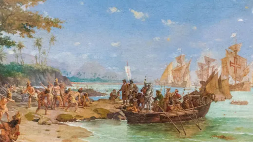

História

O Descobrimento do Brasil: Início
da
Colonização Portuguesa
Em 22 de abril de 1500, a expedição de Pedro Álvares Cabral chegou ao litoral brasileiro, iniciando a colonização portuguesa. A chegada marcou o início da dominação europeia. A viagem de Cabral fazia parte da expansão comercial portuguesa, resultando na anexação do Brasil ao império português.
O Início da Colonização Portuguesa no Brasil
A colonização portuguesa no Brasil iniciou com a exploração do pau-brasil e a criação de feitorias na costa. Em 1530, foi implementado o sistema de capitanias hereditárias para ocupar e defender o território, incentivando a agricultura e a produção de açúcar. A mão de obra escrava, inicialmente indígena, foi substituída pela africana, fundamental para a economia colonial.
Missionários jesuítas também chegaram para converter os indígenas ao cristianismo, influenciando a cultura e a organização social. Esse processo de colonização deixou um legado de exploração.